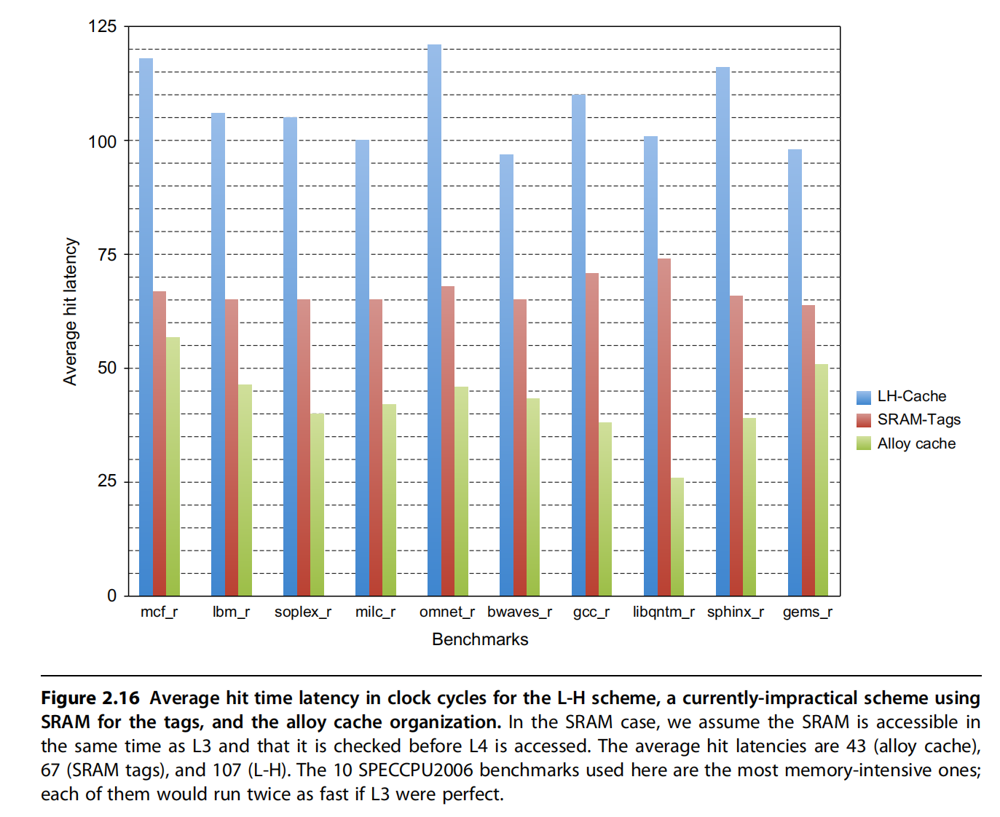
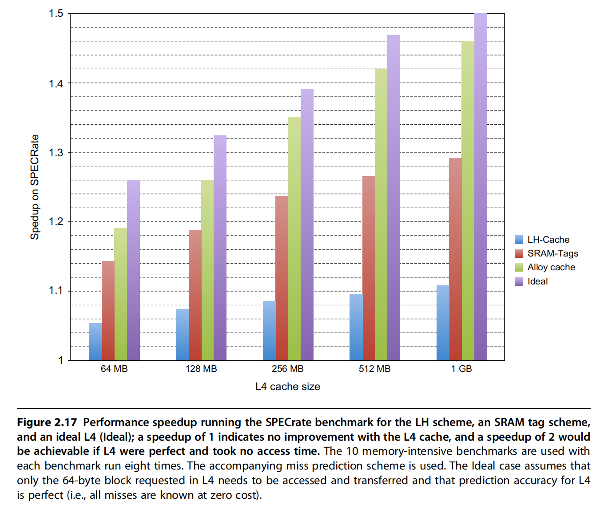

HBM
基本概念
HBM（High Bandwidth Memory）是一种高带宽内存技术，专为满足现代计算任务中对大规模数据吞吐量的需求而设计。与传统的内存技术（如DDR、GDDR）相比，HBM的带宽要高得多，它主要用于图形处理单元（GPU）、高性能计算（HPC）、人工智能和深度学习等领域，以提升数据传输速率和系统性能。
主要特点
- 3D堆叠设计：
- HBM采用3D堆叠（stacked）技术，将多个内存芯片垂直堆叠在一起，使用硅通孔（TSV）进行连接。这样设计的好处是减少了芯片之间的物理距离，从而提高了数据传输效率。
-
由于每个内存芯片之间的连接非常短，数据可以在芯片之间更快速地传输，进一步减少了延迟并提高了带宽。
-
高带宽：
- HBM提供比传统内存（如DDR或GDDR）更高的带宽，通常可以达到数百GB/s。比如，HBM2的带宽可以达到256GB/s甚至更高，而传统的DDR4内存带宽通常在几十GB/s左右。
-
高带宽使得HBM非常适合需要频繁访问大量数据的应用，如图形处理、AI推理和科学计算等。
-
低功耗：
- 由于其高效的带宽传输和低功耗设计，HBM相较于其他类型的内存（如GDDR）具有更低的功耗。
- 在高性能计算和大型数据中心中，低功耗是一个非常重要的特性，能够帮助节省能源并降低运行成本。
HBM的版本
- HBM1：第一代HBM技术，推出时每颗内存芯片的带宽大约为128GB/s，主要用于早期的高性能GPU。
- HBM2：第二代HBM，比HBM1有更高的带宽（最高可达256GB/s）和更大的容量，通常应用于更高级的GPU和高性能计算系统。
- HBM2E：HBM2的增强版，进一步提高了带宽（最高460GB/s）和存储容量，适用于对内存带宽要求极高的应用。
- HBM3：第三代HBM，未来将提供更高的带宽和更高的容量，预计会应用于更加复杂的AI训练、超算等领域。
如何优化缓存
使用HBM扩展存储器层次结构以优化缓存：
- L4缓存位于传统的L3缓存和主内存之间，是缓存层次结构中的一个较高层次，用于减缓处理器访问主内存的延迟。
- 核心思想：使用HBM作为大容量L4缓存，以利用HBM的高带宽、低延迟特性。
问题
- 容量与块大小的矛盾
- 目标：使用HBM构建大容量L4缓存（如1 GiB），但块大小（Block Size）直接影响标签存储开销。
- 具体矛盾点：
- 使用小数据块（64B）：标签存储需求极大（1 GiB缓存需96 MiB标签），远超CPU片上SRAM容量。
- 使用大数据块（4KiB）：标签存储锐减至1 MiB，但引入两个严重问题：
- 碎片化：未使用的数据块部分浪费缓存空间。
- 高缺失率：块数量减少，导致冲突缺失（Conflict Miss）和一致性缺失（Coherence Miss）增加。
解决方案
1.子块（Sub-blocking）
- 原理：允许块内部分子块有效，缺失时仅传输有效子块。
- 作用：缓解碎片化问题，但无法解决块数量减少导致的缺失率提升问题。
2.标签与数据共存的HBM设计（L-H）
- 传统障碍：标签与数据分离需两次DRAM访问（标签访问 + 数据访问），延迟过高。
- Loh & Hill (L-H) 方案：
- 核心思想：将标签和数据置于同一HBM行中，利用DRAM行缓冲（Row Buffer）特性减少延迟。
- 实现：
- 每个HBM行包含标签和29个数据段，构成29路组相联缓存。
- 访问时先打开行读取标签，命中后通过列（CAS）访问获取数据。
- 延迟优化：同一行的列访问延迟仅为新行访问的三分之一。
3. 熔合缓存（Alloy Cache, Qureshi & Loh 2012）
- 改进点：
- 标签与数据融合：直接映射结构，标签和数据通过突发传输（Burst Transfer）一次性读取。
- 延迟优势：命中时间缩短至单HBM周期，比L-H方案快50%以上。
- 代价：直接映射导致缺失率上升至L-H方案的1.1-1.2倍。
性能权衡与对比
-
平均命中延迟： 
-
加速比： 
| 方案 | 命中延迟 | 缺失率 | 结构复杂度 |
|---|---|---|---|
| 基于SRAM的标签 | 中等 | 最低 | 高（需大容量SRAM） |
| L-H方案（29路组相联） | 高 | 中等 | 中等（行缓冲优化） |
| 熔合缓存（直接映射） | 最低 | 较高 | 低（突发传输简化） |
总结
- 核心挑战：HBM作为L4缓存的标签存储需平衡块大小、延迟与缺失率。
- 创新方案：
- L-H方案：通过行缓冲优化标签与数据共存，平衡延迟与关联性。
- 熔合缓存：牺牲部分缺失率换取极致低延迟，适用于延迟敏感场景。
- 未来方向：
- 结合子块技术优化碎片化问题。
- 探索混合映射策略（如动态调整块大小）。
- 利用HBM带宽提升突发传输效率，进一步降低延迟。
这些方案体现了在存储器层次设计中，如何通过硬件-软件协同创新（如DRAM访问特性利用、缓存结构优化）解决容量与性能的矛盾。